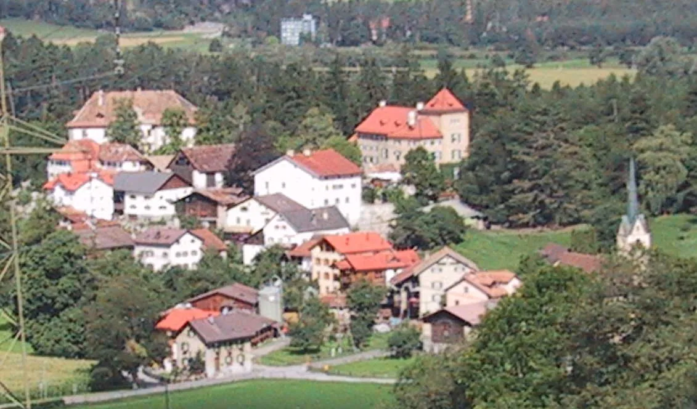
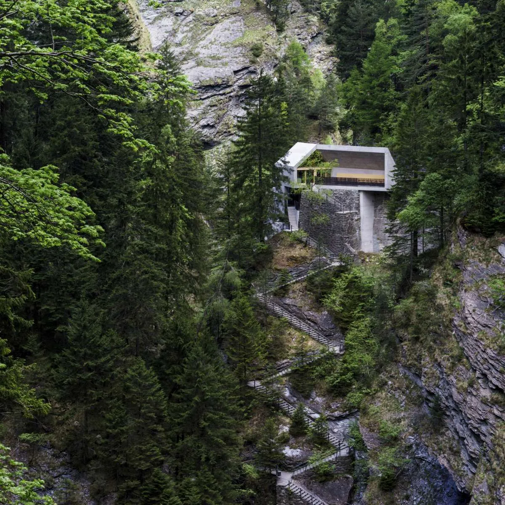
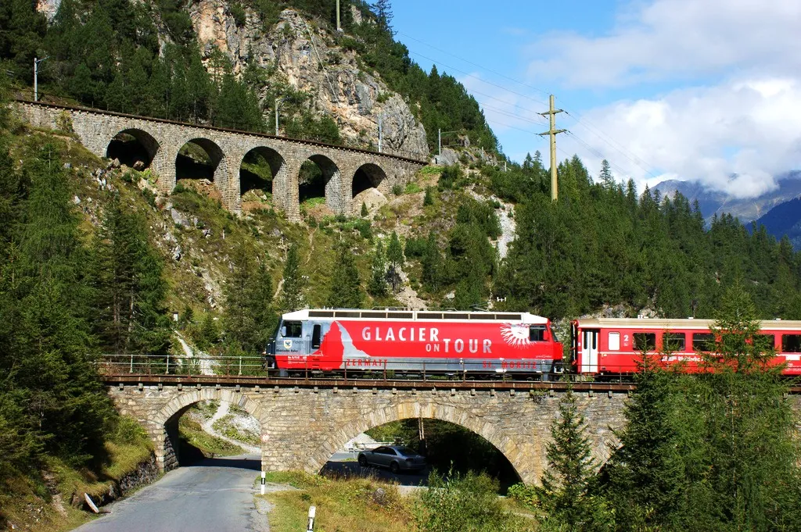
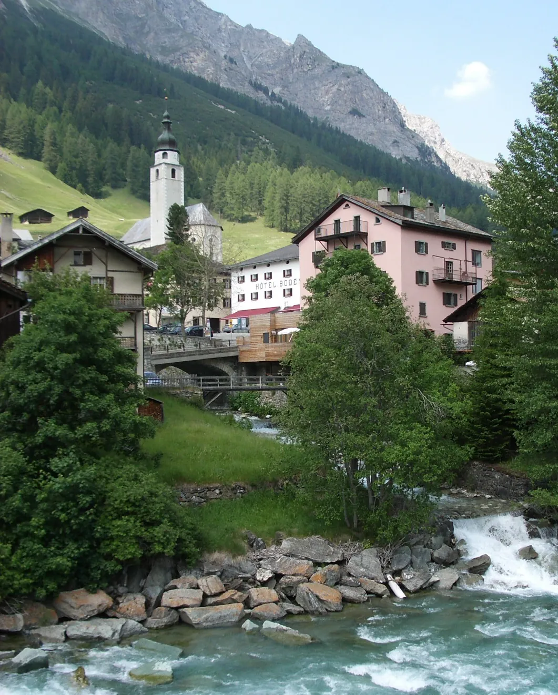
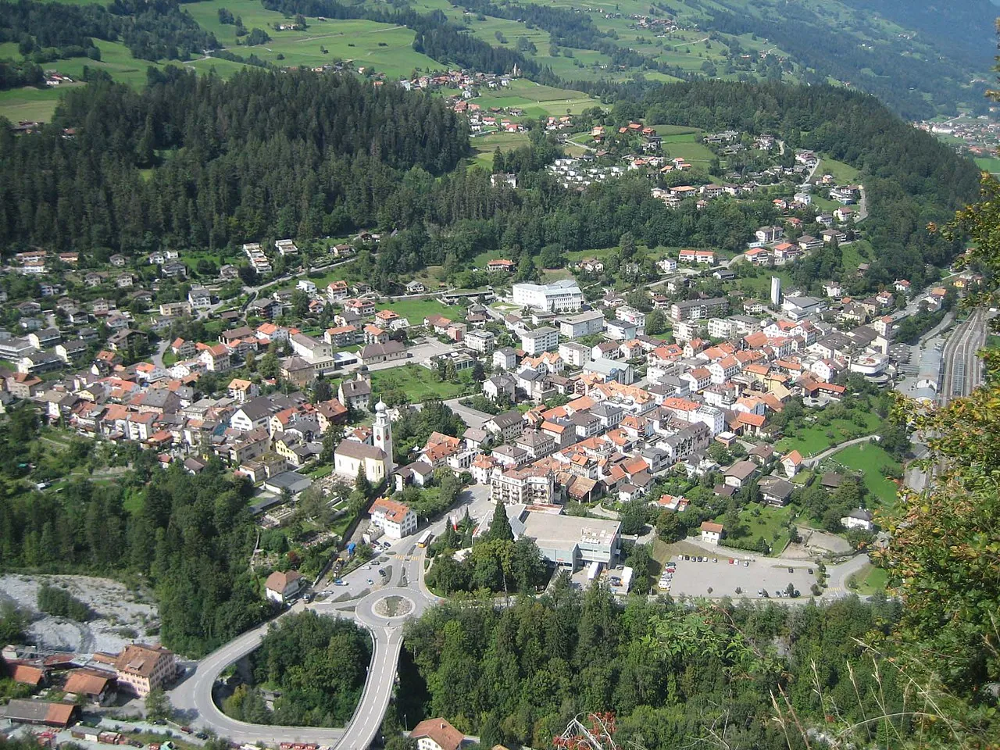
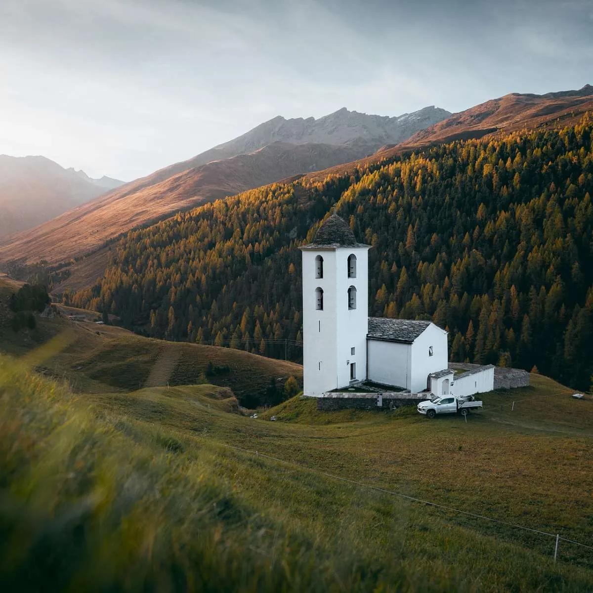
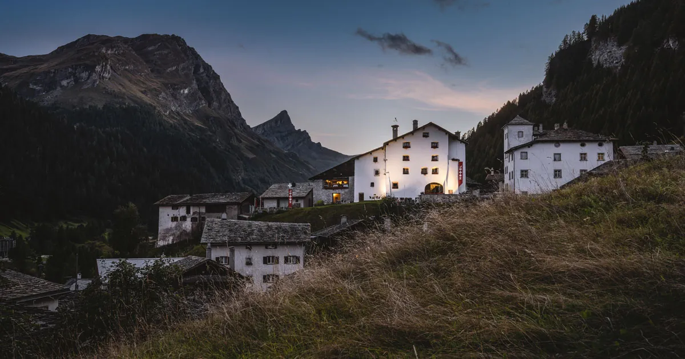

14:30
Train to Thusis
Zürich HB → Thusis via Chur, ~2h10. The Schauenstein free shuttle terminates at Thusis station [13]. Taxi from Chur runs CHF 80–120 if you skip the train [9].
Fri arrival · Sat Caminada · Sun long way home
Train to Thusis
Zürich HB → Thusis via Chur, ~2h10. The Schauenstein free shuttle terminates at Thusis station [13]. Taxi from Chur runs CHF 80–120 if you skip the train [9].
Check in · Fürstenau
Casa Caminada (CHF 260–380, 10 rooms) [6] or Schloss Schauenstein (CHF 610–1,070+, 12 rooms) [2] — both 100 m from the dining room.

Viamala Gorge · or stay put
15 min back toward Thusis, the Viamala Gorge trailhead — staircase down the canyon, last light is the move [14]. If the train ran late, skip it.
Walk a circle around the village
Three minutes end-to-end, world's smallest city [1]. Bed.
Breakfast at Casa Caminada
Bread from Pasternaria, the wood-fired bakery 100 m away [5].
Drive south · Andeer (17 km)
A13 down the Hinterrhein valley. Park at Mineralbad Andeer — CHF 19.50 walk-in, 8:00–21:00 [11]. The water is the warm-up for the tasting menu.

Sennerei Andeer · cheese pilgrimage
Wisconsin gold, 2010 — buy a wedge for the train home [12].
Return · Fürstenau
35 min back up the valley. Shower, change. Schauenstein is jacket; no tie required by reputation but confirm with the house.
Schloss Schauenstein · the tasting menu3★ MICHELIN
Andreas Caminada. The reason you came. Wine pairings ⇒ taxi home — even at 100 m, walking after the pairings is a polite fiction. Book table-with-room up to 8 months ahead [19].
Walk (or roll) home
If lodging is in Fürstenau, three minutes of cobble. If you went characterful in Weiss Kreuz Thusis or Bodenhaus Splügen, taxi was pre-booked at 18:00. Non-negotiable.
Pastries at Atelier Caminada
The bakery side of the empire [5]. Coffee. The hangover deserves butter.
Glaspass Erlebnisweg · Wergenstein side
15 km up to the Beverin Naturpark walk [15]. Two hours top-to-bottom, civilised. Or skip if Saturday's pairings won.

Lunch · light
Gasthaus Waldheim in Fürstenaubruck if you want one more village course [7], or pack the Sennerei wedge and the Pasternaria loaf for the train.
Train back via Thusis → Chur
If time permits, swap the direct return for the Albula UNESCO line — Thusis to Filisur to Chur, the long way around, four viaducts deep.
Zürich HB · home
Three nights, two beds, one tasting menu. The wedge survives until Wednesday.
DIAL TO BOOK · TABLE + ROOM
Schloss Schauenstein reservations · table-with-room takes both up to 8 months ahead [19]
Book the table first, then the room slot it unlocks. Without the table, the 12 rooms are competitive on their own — and the 8-month lead time is real.
Everything else on the canonical page is locked. These four still need a phone call.
The realist option. Closer to the canton than to luxury [7].
Romantik Stern
Pair the trip with Chur's small museum walk and the tech-meetup circuit [16].
The 30 km radius doubles every village. Wake somewhere, eat somewhere else, drive between.

Pass-village whose whole core is the prize. Bodenhaus + Weiss Kreuz [10].

Thusis
Where the train ends and the shuttle starts. Viamala trailhead.

Avers · Cresta
Highest year-round inhabited valley in the Alps. Detour if the weather is clear.

The medieval inn that predates everything else on this card.